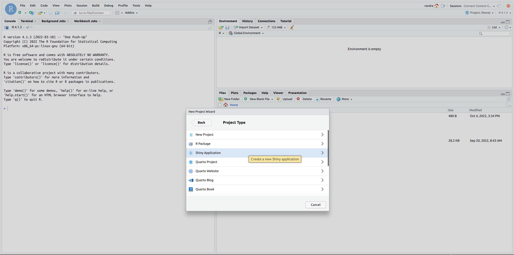
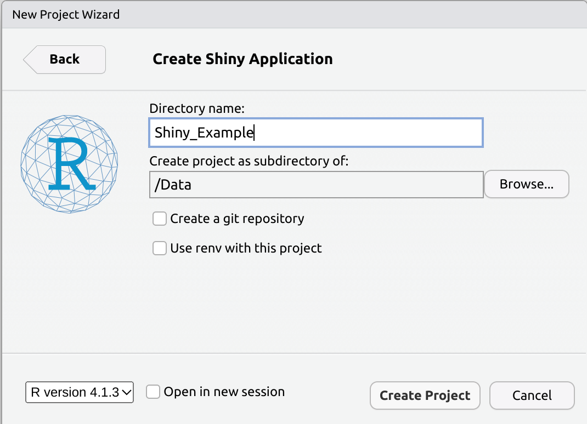
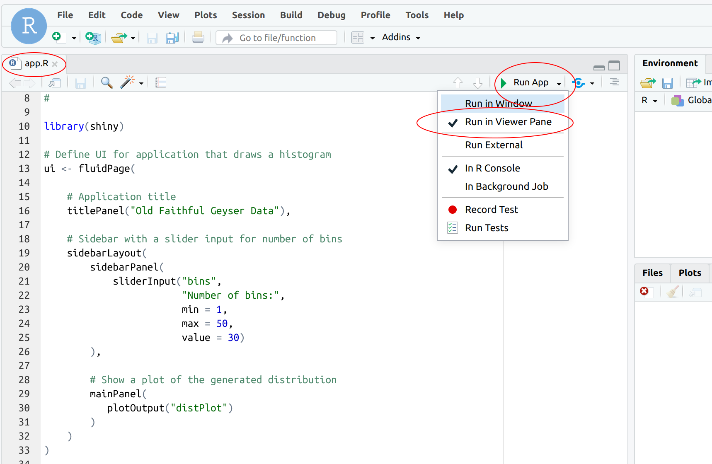
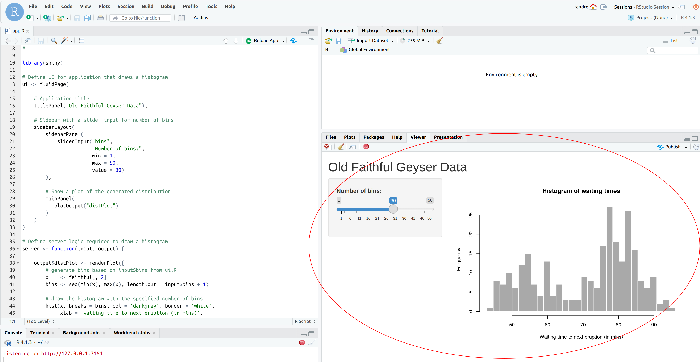
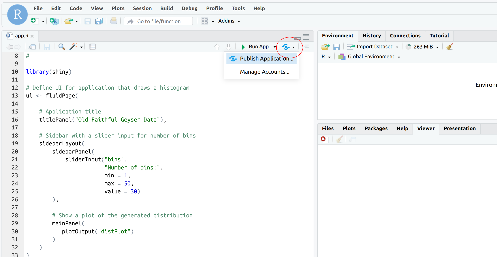
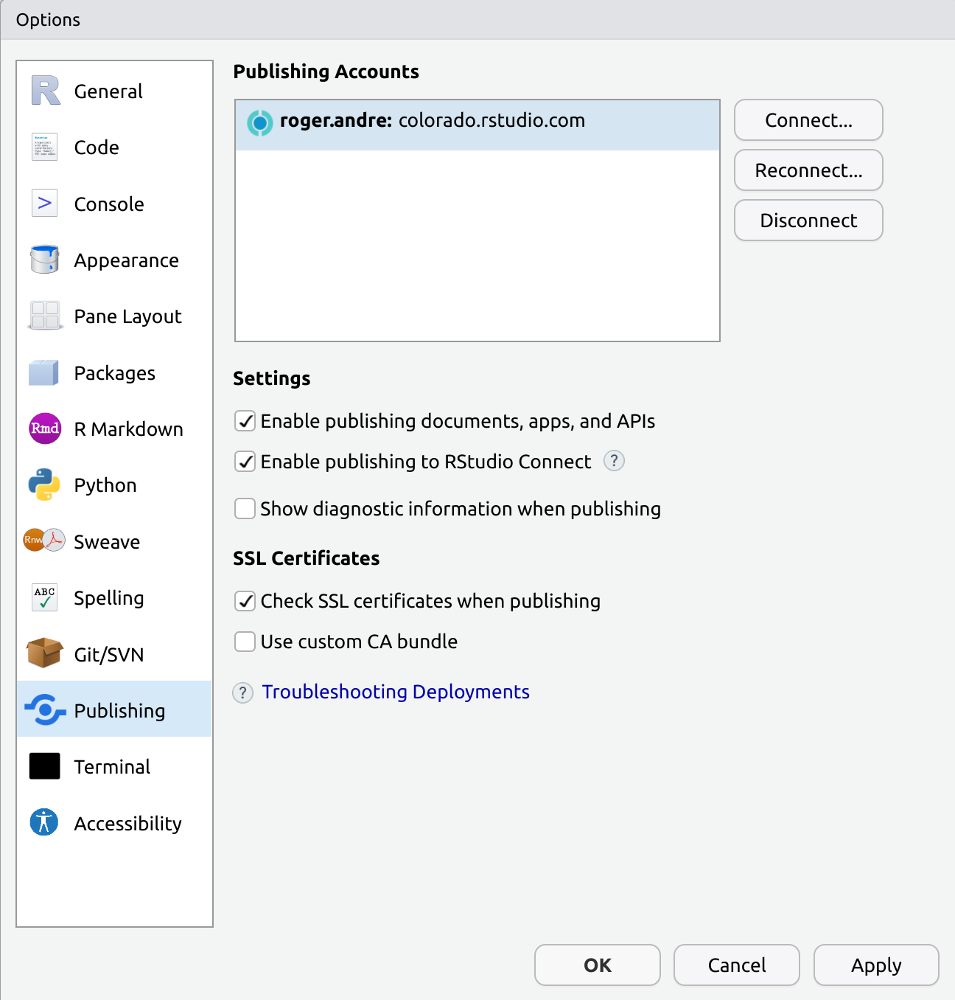
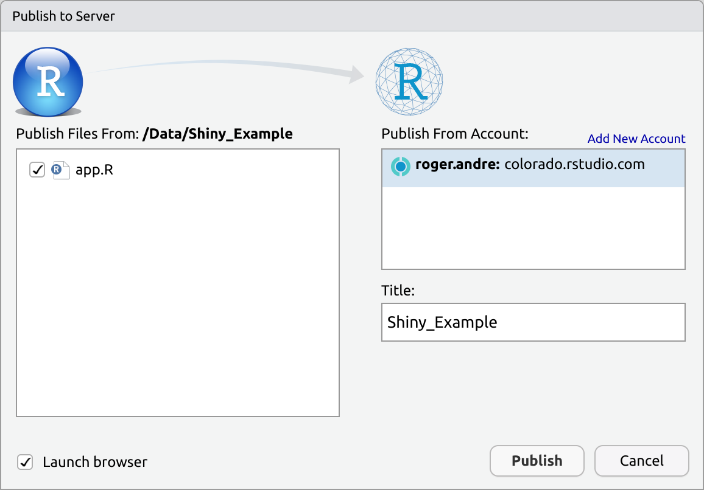
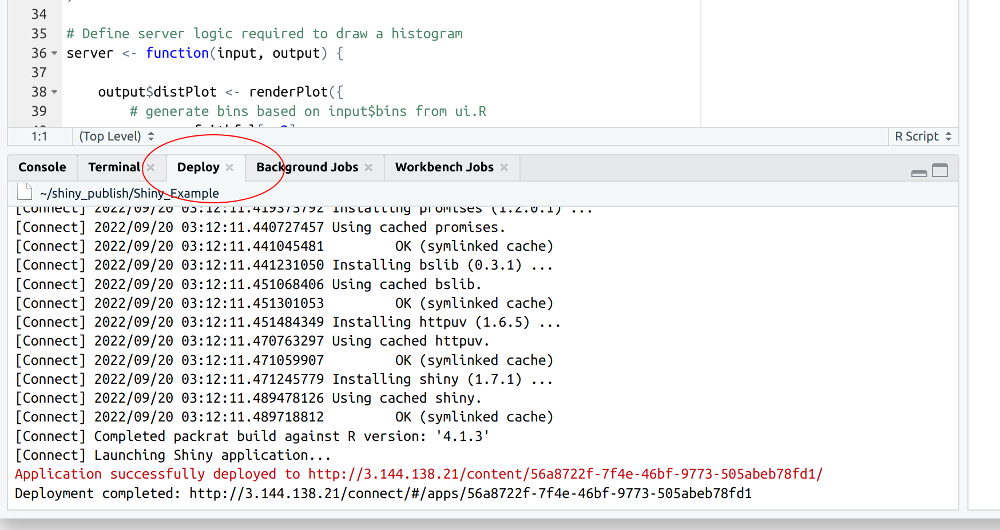
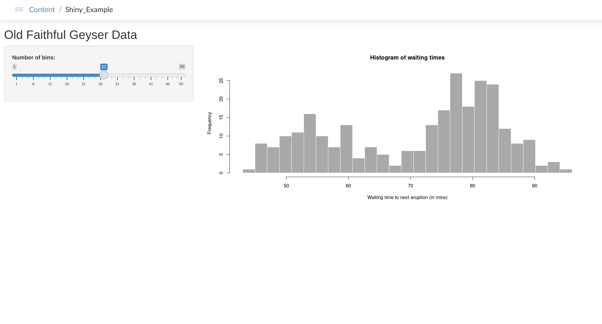

Shiny
The easiest way to publish a shiny app is via the Rstudio IDE, either using the desktop version or one of the server based products like Workbench or RStudio Server. All have built-in examples of a simple Shiny application, “Old Faithful Geyser Data”, that can be created by choosing “File”, “New Project”, “Shiny Web App” and then be published using the IDE’s built-in “Publish” button.
NOTE: An excellent guide which seems to follow the same structure that I’ve used below exists here already.
Prerequisites
shinyR package installed
Create Content
1. Create a new Project
Choose “New Directory” and “Shiny Application”

We named ours, “Shiny_Example”

This should create a new Project under /Data named “Shiny_Example” that contains a file named “app.R” which will open automatically in the IDE. RStudio should also recognize that this is a Shiny app and a “Run App” button will be visible on the right side of the editing pane.
2. Configure “Run” location
Verify that “Run in Viewer Pane” is selected in the “Run App” dropdown.

3. Run the App
Press the “Run App” button and you should see “Old Faithful Geyser Data” displayed in the Viewer Pane on the lower right.

Stop the app by clicking on one of the small red “Stop” signs, either in the Viewer Pane or in the Console.
Publish Content
1. Verify Connect server is registered
Press on the dropdown next to the “Publish” button and choose “Manage Accounts”.

This will bring up a window that shows what Connect servers you are registered to publishing to.

If the “Publishing Accounts” area is blank, follow the instructions in Connecting Your Account to register your Connect server to your IDE.
2. Publish
Once you have verified that you have a Connect server available to publish to, press the blue “Publish” icon in the IDE and then the “Publish” button to publish to the selected server.

3. Verify content deployment
Look in the “Deploy” pane of the IDE. You should see “Application successfully deployed to

NOTE: Successful deployment is not a guarantee that the the app can run. Always verify that the content is running properly on the Connect server.
4. Verify that content runs
A browser window should open automatically to the address listed in the deployment message when you publish, or you can copy and paste the URL into a browser to check whether the content is successfully running in Connect.
